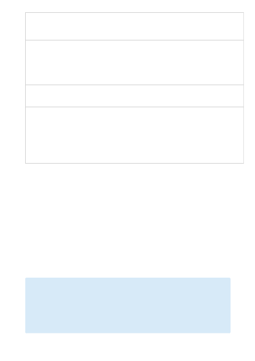

Metric
Exportable
via
Diagnostic
Settings?
Metric
Display
Name
Unit
Aggregation
Type
Description
Dimensions
TokenTransaction
Yes
Processed
Inference
Tokens
Count
Total
Number of
Inference
Tokens
Processed
on an
OpenAI
Model
ApiName,
ModelDeploymentName,
FeatureName,
UsageChannel, Region
TotalCalls
Yes
Total Calls
Count
Total
Total
number of
calls.
ApiName,
OperationName, Region,
RatelimitKey
TotalErrors
Yes
Total
Errors
Count
Total
Total
number of
calls with
error
response
(HTTP
response
code 4xx or
5xx).
ApiName,
OperationName, Region,
RatelimitKey
Data in Azure Monitor Logs is stored in tables where each table has its own set of unique properties.
All resource logs in Azure Monitor have the same fields followed by service-specific fields. The common
schema is outlined in Azure Monitor resource log schema.
The Activity log is a type of platform log in Azure that provides insight into subscription-level events. You
can view it independently or route it to Azure Monitor Logs, where you can do much more complex
queries using Log Analytics.
For a list of the types of resource logs available for Azure OpenAI and other Cognitive Services, see
Resource provider operations for Cognitive Services
Analyzing logs
Kusto queries
）
Important
When you select Logs from the Azure OpenAI menu, Log Analytics is opened with the query scope
set to the current Azure OpenAI resource. This means that log queries will only include data from that
resource. If you want to run a query that includes data from other resources or data from other Azure
services, select Logs from the Azure Monitor menu. See Log query scope and time range in Azure